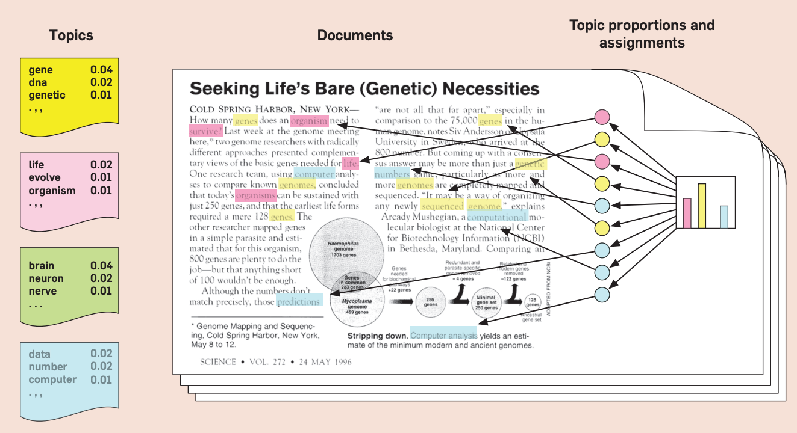
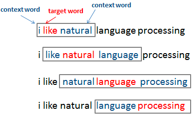

词嵌入方法
Word Embedding
讲者：陈昊瀚
香港大学 政治与公共行政学系
今天讲什么
词嵌入有什么用？ (10min)
词嵌入方法原理 (30min)
词嵌入应用实例：标记《新闻联播》文字稿 (40min)
总结 (10min)
学习目标：
两小时精通词嵌入明白词嵌入的基础原理和简单应用
本课参考资料
幻灯片地址（临时）：
代码地址（临时）：
词嵌入有什么用？
计量文本分析：把文本变成数字的科学/艺术/工程
传统方法 I: 手工标注全部文档
优点：准确（特别是对于复杂任务）
缺点
费眼睛/费钱
难以复现或延展
传统方法 II: 手工标注部分文档+有监督机器学习
优点：相对准确（特别是对于复杂任务）
缺点
相对费眼睛/费钱
复杂模型可能难以解释
难以复现或延展传统方法 III: 词典法
传统方法 III：词典法
优点
容易复现
耗费劳力较小
缺点
对关键词准确性要求高
难以延展到不熟悉的新数据
传统方法 IV: 主题模型 (1)
Source: Blei (2012)
传统方法 IV: 主题模型 (2)
优点：
耗费劳力小
方便了解大型文本数据的全貌
缺点
主题的解读比较主观
难以事先把自己重点关注的方向"传达"给机器模型
较难复现和延展
总结"传统方法"的适用情境
手工标注所有文档：文本少，任务复杂，准确性要求高，人力充足（时间或钱）
手工标注部分文档+有监督学习：文本多，任务较复杂，人力稍充足（时间或钱）
词典法：文本多，任务简单，研究者有清楚定义好的规则
主题模型：文本多，研究者主要想探索数据内容
社会科学研究里文本分析的常用情境
有一个感兴趣（不算很复杂）的"概念" （例："有关经济的新闻"、"有关疫情的报道"）
想从大量文档中找到与此"概念"最相关的一批文档（有可能只占一小部分）
不想对文档进行人工标注
对这个"概念"包含哪些关键词有一些初步的想法（可能有一个小词典）
但不确定这个词典够不够准确
词嵌入方法能为社会科学研究者做什么？
让机器学习帮助研究者拓展一个可能并不全面/准确的"概念"词典
让机器学习帮助研究者把文档和你关心的"概念"之间的关联度量化
用较少的人力得到相对准确的文档标注
词嵌入方法原理
一个古老的语言学假设
Distributional hypothesis (Firth, 1957)
“You shall know a word by the company it keeps.”
意译："知道一个词和什么相伴出现，就学会这个词了。"
举个例子🌰
如果你不懂中文，你能从这几句话里学到什么？
今天 上海 迎来 高温 天气
今天 北京 迎来 高温 天气
今天 重庆 迎来 高温 天气
今天 江苏 迎来 高温 天气
今天 浙江 迎来 高温 天气
今天 广东 迎来 高温 天气
举个例子🌰
如果你不懂中文，你能从这几句话里学到什么？
今天 上海 迎来 高温 天气
今晚 上海 迎来 高温 天气
明天 上海 迎来 高温 天气
后天 上海 迎来 高温 天气
下周 上海 迎来 高温 天气
下月 上海 迎来 高温 天气
举个例子🌰
如果你不懂中文，你能从这几句话里学到什么？
今天 上海 迎来 高温 天气
今天 上海 迎来 大风 天气
今天 上海 迎来 雷雨 天气
今天 上海 迎来 寒冷 天气
今天 上海 迎来 雨雪 天气
今天 上海 迎来 冰雹 天气
举个例子🌰
假如你看到所有的组合呢？
今天/明天/后天/本月/下周/今晚
上海/北京/重庆/江苏/浙江/广东
迎来
高温/大风/雷雨/寒冷/雨雪/冰雹
天气
词嵌入方法原理
- 让机器学习模型对海量文字数据做我们刚才人工对这个例子做的事，进而让机器"理解"语言
具体而言：让模型从词语相伴出现的规律中"习得"词与词之间的关系
把这个任务交给机器前，研究者的任务
如何定义"相伴出现"？
如何表示"词与词之间的关系"？
如何定义"相伴出现"
设一个沿着文本移动的"滑动窗口"，窗口中心为"目标词"，窗口两边为"背景词"
如何表示"词与词之间的关系"
人脑中的语言有一个"地图"，我们给机器也定义一个可量化的"地图"
把每个词的"意思"表达为它在一个高维空间（50-300维）的坐标
词与词之间的关系用它们的坐标之间的距离表示

机器如何学"画"这张语言地图？
（一个通俗易懂的极度简化解释）
初始化：每个词被随机"撒"在这个空间上（随机赋予初始坐标值）
训练机器学习模型：根据数据（词语两两是否相伴出现）微调词语的空间坐标
发现两词相伴出现了：坐标"拉近"一些
没有相伴出现：坐标"拉远"一些
结果：相似的词语被调整到空间中相近的坐标位置
听起来挺简单的？
一些技术挑战（不是我们关注的重点）
如何给机器定义优化目标
模型训练中如何"微调"词语的空间位置：每次调整幅度多大？什么时候停止？
如何避免常用词或罕见词过度影响结果
如何提高模型拟合速度，减小内存/CPU消耗（特别是对于很大的数据）
一些要决定的细节
具体如何定义"相伴出现"（窗口的大小）
空间的维度（50维？100？300？）
包括固定搭配/词组与否？包括多少？
词嵌入模型训练完成后，得到什么？
每个词语都得到一个空间坐标
坐标数值并没有可解释的意义
如何使用这些不可解释的坐标值？
词嵌入的绝对坐标不可解释
但坐标之间的相对距离是可理解的
意义相关的词，坐标也会接近
用简单的解析几何，可以帮我们给任意文档中的词寻找距离相近的词：余弦相似度 (cosine similarity)
\[ \text{sim}(w_{词1}, w_{词2}) = \frac{w_{词1} w_{词2}}{||w_{词1}|| ||w_{词1}||} \]
距离相近的词不等于近义词！
注意：词嵌入的距离相近的词
有可能是近义词
有可能是反义词
有可能是因为其他原因相关的词
机器没有近/反义词的概念，它只机械地根据词语相伴出现的概率给词"定位"
找距离相近的词有什么用？
回到前面社会科学研究者对文本分析的常用情境
有一个感兴趣的"概念" （例："有关经济的新闻"、"有关疫情的报道"）
想从大量文档中找到与此"概念"最相关的一批文档（有可能只占一小部分）
没办法对每篇文档都进行人工标注
对这个概念包含哪些关键词有一些初步的想法（可能有一个小词典）
但不确定这个词典会不会有遗漏
用词嵌入方法拓展"概念"词典！
由初步想法决定"种子"词 （例：以"疫情"为种子词）
用词嵌入寻找与"种子"词相近的词 （例：找到"新冠病毒" "抗疫" "防疫"）
汇总"概念"词典，得到"概念"的空间向量表示
寻找与感兴趣的"概念"相近的文档
如何得到概念的空间向量表示？
词嵌入重要性质：相加减具有意义 (Additive Compositionality)
\[ w_{概念i} = w_{词i1} + w_{词i2} + ... + w_{词in} \]
例如
\[ w_{新冠疫情话题} = w_{疫情} + w_{新冠病毒} + w_{抗疫} + w_{防疫} + ... \]
如何得到文档的空间向量表示？
同理，一篇文档的意义的空间向量表示可由文档中所有词语的词向量相加表示
\[ w_{今天 上海 迎来 高温 天气} = w_{今天} + w_{上海} + w_{迎来} + w_{高温} + w_{天气} \]
注：由词向量构造文档向量有更复杂的合并方法。时间所限不展开。研究和个人经验表明如此简单相加效果已足够好。更进一步可用TF-IDF权重。
词嵌入应用实例：标记《新闻联播》文字稿
实例数据
数据：2020年上半年《新闻联播》播报文字稿共2646篇
来源：由王弈强（香港大学）从央视网收集
本实例操作目标：标记出该时期有关新冠疫情的新闻稿
实操：基于R语言的词嵌入实现
text2vec包
项目主页（含使用说明）：https://text2vec.org/
项目Github页面：https://github.com/dselivanov/text2vec
优点
高效、耗费资源少
可靠
易上手
小缺点：并没有频繁的维护更新（倒也不需要）
下面为R编程展示
可下载本教程的Github文件夹复现、拓展
所用数据包含在文件夹中
总结
应用词嵌入方法的注意事项
大数据或小数据都可尝试此方法（关键不在于文档数量，而在与文本总长度）
原则上，数据量越大，词嵌入效果越好（相关的词越容易被被找到）
若词嵌入后效果不理想，可调整参数
重视中间步骤的人工筛选
可以此方法做"初筛"，再与"人工标注部分文档"方法相结合
延伸阅读
拙作（今日所讲内容的延伸）
方法论工作论文：Chen
应用于非营利组织研究：Chen & Zhang (2021)
词嵌入的技术文献
政治学方法论文献
社会学应用